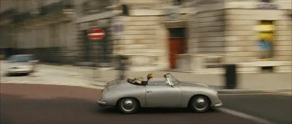
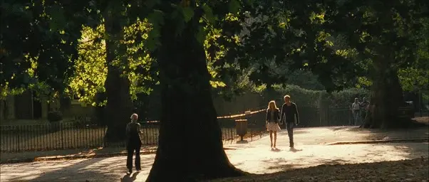
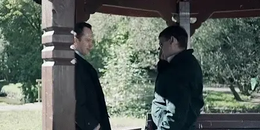
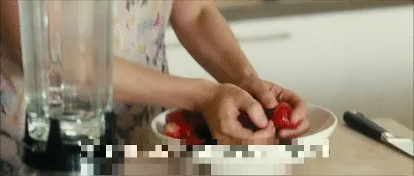

MUSES is a large-scale video dataset, designed to spur researches on a new task called multi-shot temporal event localization. The dataset and the task are described in the following paper:
Multi-shot Event Localization: a Benchmark
Xiaolong Liu1,2, Song Bai2,3, Fei Ding2, Yao Hu2, Xiang Bai1, Philip H.S. Torr3
1Huazhong University of Science and Technology
2Alibaba Group
3University of Oxford
Abstract
Current developments in temporal event or action localization usually target actions captured by a single camera. However, extensive events or actions in the wild may be captured as a sequence of shots by multiple cameras at different positions. In this paper, we propose a new and challenging task called multi-shot temporal event localization, and accordingly, collect a large scale dataset called MUlti-Shot EventS (MUSES). MUSES has 31,477 event instances for a total of 716 video hours. The core nature of MUSES is the frequent shot cuts, for an average of 19 shots per instance and 176 shots per video, which induces large intra-instance variations. Our comprehensive evaluations show that the state-of-the-art method in temporal action localization only achieves an mAP of 13.1% at IoU=0.5. As a minor contribution, we present a simple baseline approach for handling the intra-instance variations, which reports an mAP of 18.9% on MUSES and 56.9% on THUMOS14 at IoU=0.5. To facilitate research in this direction, we release the dataset and the project code.
Explore MUSES
What’s included in MUSES:
- 3,697 videos of TV and movie dramas
- 716 hours of duration
- 25 event categories
- 652k shots
- 31,477 annotated event instances
In each video, we annotate all event instances with temporal boundaries and categories. On average, there are 3.3 categories and 8.5 instances per video.
Multi-Shot Events
A unique characteristic of MUSES, which collects TV and movie dramas, is the highly frequent shot cuts. Herein, a shot means a single sequence of video frames taken by one camera without interruption1. Because of the use of multi-camera shooting and professional editing techniques, a complete action or event in such videos is usually expressed as a sequence of meaningful short shots connected by cuts of various types, such as direct cuts, cut-ins, cut-outs and dissolves.
| 
|

|
| 
|

|
The key challenge of localizing events in TV shows and movies is the large intra-instance variation, induced by the nature of shot cuts. As can be observed in Fig. 2, the view angles and the depth of fields across shots vary dramatically. Meanwhile, due to the existence of shot cuts, some side effects occur, such as scene change, actor change, and heavy occlusions. With such large variations within a single instance, the difficulty of localizing a complete event across shots is significantly increased.

Categories
The 25 event categories in MUSES are conversation, quarrel, crying, fight, drinking, eating, telephone conversation, horse riding, hugging, stroll, driving, chasing, gunfight, modern meeting, speech, ancient meeting, kissing, war, playing an instrument, dance, (human) flying, cooking, singing, bike riding, and desk work.
For a detailed description of MUSES, please refer to our paper.
Download
We provide the videos, annotations, and the I3D features.
- Videos: MP4 format. The total size is 122GB. [link]
- Features: NPY (numpy) format. The total size is 8GB. [link]
- Annotations: JSON format. [link]
The code, models of the baseline method as well as the evaluation kit are released on GitHub.
Other Info
Refer to this page for some knowledge about film making.
Contact
For questions and suggestions, please contact Xiaolong Liu (liuxl at hust dot edu dot cn).